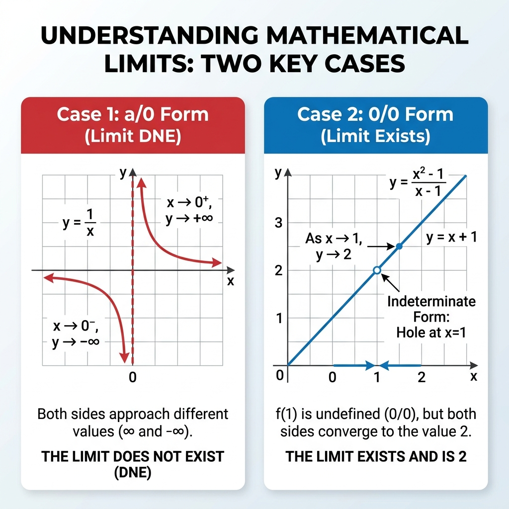
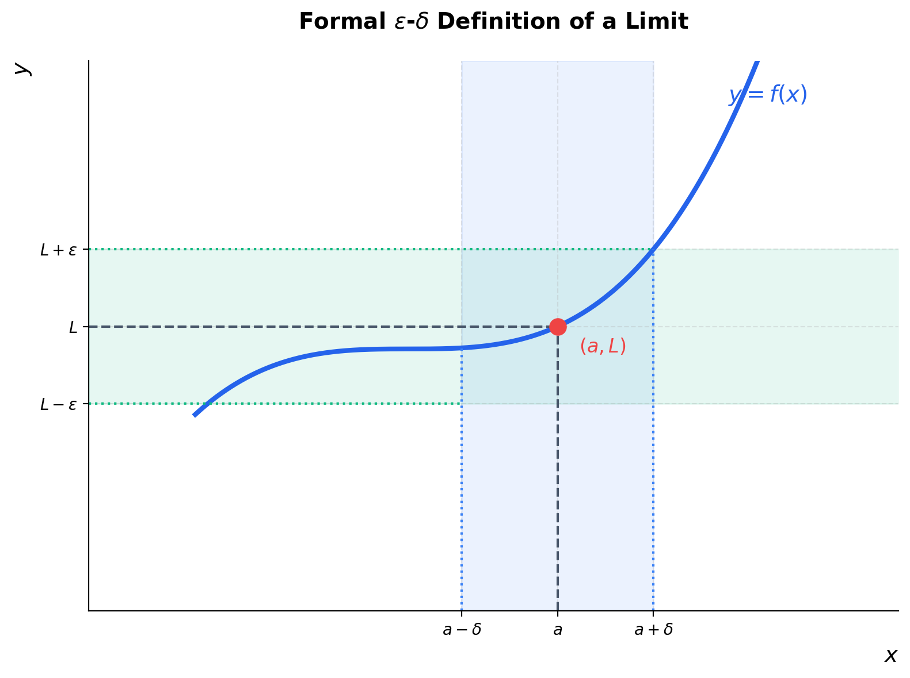

Limits#
In mathematics, a limit is the foundational building block of Calculus. It describes what value a function approaches as its input variable gets closer and closer to a specific point, regardless of whether the function is actually defined at that exact point.
1. Why Do We Need Limits in Calculus?#
Limits serve as the mathematical “bridge” that allows us to handle division by zero and infinitesimally small quantities, paving the way for the creation of Calculus.
The \(\frac{0}{0}\) Indeterminate Form#
In classical algebra and geometry, division by zero is strictly prohibited. However, the two foundational problems that led to the development of Calculus directly encounter this issue:
Instantaneous Velocity (Leads to Derivatives): If you travel \(100\text{ km}\) in \(2\text{ hours}\), your average velocity is \(v = \frac{\Delta s}{\Delta t} = \frac{100}{2} = 50\text{ km/h}\). But what if you want to know your exact speed at a single instantaneous second (when \(\Delta t = 0\))? The classical formula yields \(\frac{\Delta s}{\Delta t} = \frac{0}{0}\), which is algebraically undefined.
Tangent Line of a Curve: To find the slope of a line passing through two points, we use \(m = \frac{y_2 - y_1}{x_2 - x_1}\). But a tangent line only touches a curve at a single point. When the second point merges with the first point, the distance becomes \(0\), leading to a slope of \(m = \frac{0}{0}\).
Limits resolve this by allowing us to calculate behavior infinitely close to \(0\) without ever evaluating at \(0\) directly:
Note
Distinguishing \(\frac{a}{0}\) vs. \(\frac{0}{0}\) (The Key to Calculus):
The \(\frac{a}{0}\) Form (where \(a \neq 0\), e.g., \(\frac{1}{x}\)): If we let \(x\) approach \(0\) on the number line:
Approaching from the left (\(-1 \to 0\)): We divide by extremely small negative values (e.g., \(\frac{1}{-0.000001} = -1,000,000\)), so the value shoots to negative infinity (\(-\infty\)).
Approaching from the right (\(1 \to 0\)): We divide by extremely small positive values (e.g., \(\frac{1}{0.000001} = 1,000,000\)), so the value shoots to positive infinity (\(+\infty\)).
Because the two sides head in opposite directions to different infinities (\(\pm \infty\)), the limit does not exist, and we observe a vertical asymptote.
The \(\frac{0}{0}\) Form (Indeterminate Form): Unlike the \(\frac{a}{0}\) case, here the numerator is also shrinking to zero, which “counters” the division-by-zero explosion. The result depends entirely on how fast the numerator and denominator approach zero relative to each other:
If \(f(x) = \frac{x}{x}\), the ratio is always \(1\) for any \(x \neq 0\). The limit is \(1\).
If \(g(x) = \frac{2x}{x}\), the ratio is always \(2\) for any \(x \neq 0\). The limit is \(2\).
If \(h(x) = \frac{x^2}{x}\), the ratio simplifies to \(x\). As \(x \to 0\), the limit is \(0\).
Since \(\frac{0}{0}\) can resolve to \(1, 2, 0\), or any other real number, it is called indeterminate (undetermined) and is the only form capable of representing rates of change and derivatives.

Fig. 7 Comparison between a/0 (Limit does not exist) and 0/0 (Limit exists) forms.#
The Foundation of Derivatives and Integrals#
Both core operations of Calculus are defined entirely through limits:
Derivatives: The limit of the rate of change as the interval \(h\) approaches \(0\):
\[f'(x) = \lim_{h \to 0} \frac{f(x+h) - f(x)}{h}\]Integrals: The limit of Riemann sums as we divide the area under a curve into an infinite number of infinitely thin rectangles (\(n \to \infty\)):
\[\int_{a}^{b} f(x) dx = \lim_{n \to \infty} \sum_{i=1}^{n} f(x_i^*) \Delta x\]
The Tangent Line Problem: A Conceptual Preview#
The most famous geometric illustration of why we need limits is the Tangent Line Problem:
Secant Line: In algebra, we can easily find the slope between two separate points on a curve. This is called a secant line.
The Tangent Obstacle: If we want to find the slope at exactly one single point (the tangent line), the points merge, the distance becomes zero, and our slope formula results in an undefined division by zero (\(\frac{0}{0}\)).
The Limit Solution: By taking the limit as the distance between the two points approaches zero (\(\Delta x \to 0\)), the secant line gradually rotates and aligns perfectly with the tangent line. This slope is what we call the derivative.
(We will explore the complete mathematical definition of the derivative and its applications in the next chapter: Calculus & Derivatives).
2. The Intuition of a Limit#
Consider the function:
If we try to evaluate this function at \(x = 1\), we get a division by zero:
However, we can look at the values of \(f(x)\) as we choose inputs extremely close to \(1\):
\(x\) (approaching from left) |
\(f(x)\) |
\(x\) (approaching from right) |
\(f(x)\) |
|---|---|---|---|
\(0.9\) |
\(1.9\) |
\(1.1\) |
\(2.1\) |
\(0.99\) |
\(1.99\) |
\(1.01\) |
\(2.01\) |
\(0.9999\) |
\(1.9999\) |
\(1.0001\) |
\(2.0001\) |
Even though \(f(1)\) is undefined, the output values of \(f(x)\) are heading directly toward \(2\) as \(x\) gets closer to \(1\). Mathematically, we express this as:
Using algebra, we can simplify the expression:
Note
L’Hôpital’s Rule Preview: When encountering indeterminate forms like \(\frac{0}{0}\) or \(\frac{\pm \infty}{\pm \infty}\), instead of algebraic simplification, we can use L’Hôpital’s Rule (which utilizes derivatives):
3. Formal Definition of a Limit (\(\epsilon\)-\(\delta\))#
To make limits mathematically rigorous, the Karl Weierstrass formal \(\epsilon\)-\(\delta\) (epsilon-delta) definition of a limit is used:
For every real number \(\epsilon > 0\), there exists a real number \(\delta > 0\) such that:

Fig. 8 Geometrical illustration of the epsilon-delta limit definition.#
Understanding the Epsilon-Delta Definition#
\(\epsilon\) (Epsilon) represents the target window of error on the vertical \(y\)-axis (output space).
\(\delta\) (Delta) represents the search window on the horizontal \(x\)-axis (input space).
The definition states: If you want the output \(f(x)\) to be within an extremely small distance \(\epsilon\) from \(L\), there must exist a matching boundary size \(\delta\) such that any input \(x\) within that distance of \(a\) (excluding \(a\) itself) lands inside the target output window.
4. One-Sided Limits and Existence#
A limit only exists if the function approaches the same value from both directions.
Left-Hand Limit: The value \(f(x)\) approaches as \(x\) approaches \(a\) from values less than \(a\):
\[\lim_{x \to a^-} f(x)\]Right-Hand Limit: The value \(f(x)\) approaches as \(x\) approaches \(a\) from values greater than \(a\):
\[\lim_{x \to a^+} f(x)\]
Existence Criterion#
The limit \(\lim_{x \to a} f(x)\) exists if and only if both one-sided limits exist and are equal:
If the left-hand and right-hand limits are not equal (such as at a step discontinuity), the limit does not exist (DNE).
5. Basic Properties of Limits#
Given that \(\lim_{x \to a} f(x) = L\) and \(\lim_{x \to a} g(x) = M\), the following algebraic properties hold:
Sum Rule: \(\lim_{x \to a} [f(x) + g(x)] = L + M\)
Product Rule: \(\lim_{x \to a} [f(x) \cdot g(x)] = L \cdot M\)
Quotient Rule: \(\lim_{x \to a} \frac{f(x)}{g(x)} = \frac{L}{M}\) (provided \(M \neq 0\))
Constant Multiple Rule: \(\lim_{x \to a} [c \cdot f(x)] = c \cdot L\) (where \(c\) is a constant)
Power Rule: \(\lim_{x \to a} [f(x)]^n = L ^ n\)
6. Continuity#
In data science, we prioritize continuous functions. Intuitively, a function is continuous if you can draw its graph without lifting your pen from the paper.
Formally, a function \(f(x)\) is continuous at a point \(x = a\) if and only if three conditions are met:
\(f(a)\) is defined (the point exists in the domain).
\(\lim_{x \to a} f(x)\) exists.
The limit equals the function’s value:
\[\lim_{x \to a} f(x) = f(a)\]
If any of these conditions fail, the function has a discontinuity at \(x = a\).
Machine Learning Connection: Continuity (along with smoothness and differentiability) is a critical requirement for gradient-based optimization algorithms (like Gradient Descent in Neural Networks). If a Loss Function is discontinuous, gradients cannot be computed, preventing the model from updating its weights properly.
7. Symbolic Limit Calculations in Python#
We can calculate symbolic limits in Python using the sympy library:
import sympy as sp
x = sp.symbols('x')
# 1. Undefined algebraic expression limit
f1 = (x**2 - 1) / (x - 1)
limit1 = sp.limit(f1, x, 1)
print("Limit of (x^2 - 1)/(x - 1) as x->1 :", limit1) # 2
# 2. Limit at infinity
f2 = 1 / x
limit2 = sp.limit(f2, x, sp.oo)
print("Limit of 1/x as x->oo :", limit2) # 0